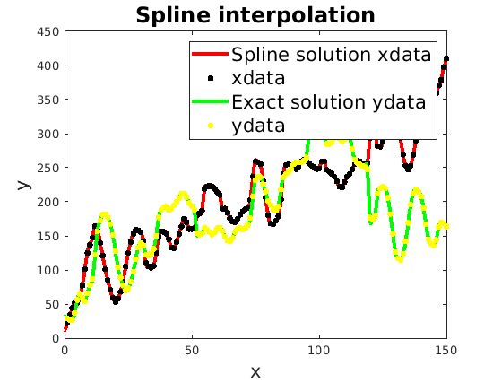

function spline_test()
[filename directory_name] = uigetfile('*.dat', 'Select a file');
XY = load(fullfile(directory_name, filename));
k = XY(:,1);
xdata = XY(:,2);
ydata = XY(:,3);
math465 = false;
if (math465)
pp = math465_build_spline(xdata,ydata);
else
end_cond = 'natural';
end_data = [xdata(1); ydata(end)]';
ppx = math565_build_spline(k,xdata,end_cond,end_data);
ppy = math565_build_spline(k,ydata,end_cond,end_data);
end
v = linspace(0,150,2000);
x_k = ppval(ppx,v); y_k = ppval(ppy,v);
figure(2)
clf;
plot(v,x_k,'r','linewidth',3);
hold on;
plot(k,xdata,'k.','markersize',12);
plot(v,y_k,'g','linewidth',3);
plot(k,ydata,'y.','markersize',12);
legend('Spline solution xdata','xdata','Exact solution ydata','ydata','fontsize',16);
xlabel('x','fontsize',16);
ylabel('y','fontsize',16);
title('Spline interpolation','fontsize',18);
shg
end
